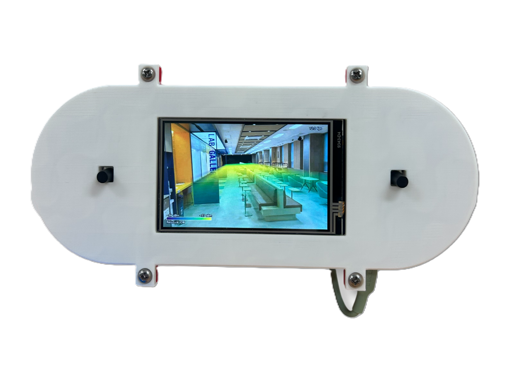
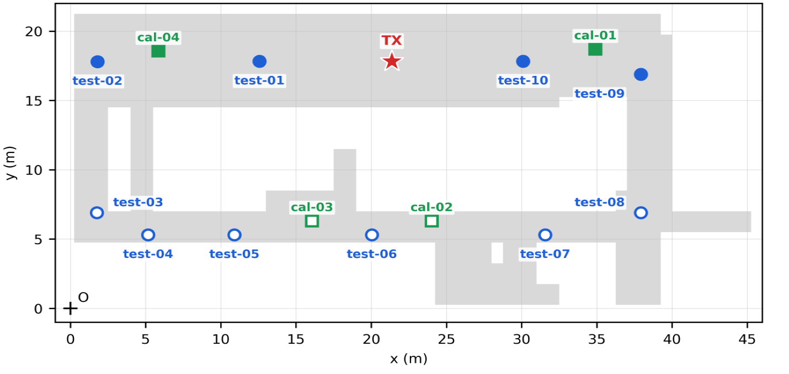

2026 졸업과제
사진 기반 실내 복원과
실측 잔차 보정을 결합한
RF 신호장 추정과 3D 시각화
3DGS로 복원한 복도에서 Sionna RT 예측과 ESP32 실측의 잔차를 공간 보간해 RF 지도를 만듦. 결과는 PC Viewer와 Handheld로 출력
10시험 지점
4비교 방법
2.78최저 MAE (dB)

02 연구 배경
2D 히트맵의 한계
- RSSI는 거리만으로 정해지지 않음. 차폐, 반사, 수신 높이가 함께 작용
- 평면 히트맵은 벽과 높이를 표현할 수 없어 급격한 변화를 설명하지 못함
- 수작업 CAD 모델링은 정확하지만 공간마다 비용 반복
접근사진 기반 복원 + 물리 시뮬레이션 + 실측 잔차 보정
2D HEATMAP
+ HEIGHT
03 장면 구성
복원 장면과
계산용 프록시
01촬영겹치는 사진과 영상
02COLMAP카메라 위치 추정
03PGSRGaussian Scene + Surface Mesh
04Proxy 정리벽·바닥·장애물 단순화
04 시스템 구성
세 갈래 데이터 흐름
측정은 분석으로, Viewer 영상은 LCD로, Handheld 입력은 다시 Viewer로 감
RSSI DATA
Remote ESP32 × 4원격 실측
ESP32 Gateway수집 · 자체 실측
STM32검증 · JSON
MQTT중계
Backend저장 · QC
VIDEO
3D Viewer800×480
Image Relay최신 프레임
HandheldLCD 출력
CONTROL
BNO085자세 · 버튼
BackendUDP → WS
3D Viewer카메라 제어

시험 10 · 보정 4 · 송신기 1
05 실험 설계와 측정
보정점을 LoS와 NLoS에 나눠 배치
- 중앙 코어를 둘러싼 링 복도. 코어 뒤편에 깊은 NLoS 영역이 생김
- 보정 4점을 LoS 2 · NLoS 2로 나눔. 한쪽에 몰리면 반대편이 외삽이 됨
- 시험 10점은 LoS 4 · NLoS 6. 보정에 쓰지 않고 평가에만 씀
- ESP-NOW로 Gateway에 모으고, STM32가 체크섬과 순번을 검증
- 송신기
- ipTIME N602SR · 2.437 GHz
- 높이
- TX 0.80 m · RX 0.45 m
- 절차
- 1회 순회 · 지점당 120 s
- 대표값
- 이동평균의 중앙값
06 수집과 검증
원본 보존과 이상값 처리
- STM32 → Python Bridge → MQTT(QoS 1) → Backend 순으로 전달
- 비정상 표본도 삭제하지 않음. 제외 사유와 함께 원시 데이터에 남김
- 대표값 계산과 잔차 보정에서만 제외. 평가 근거를 되짚을 수 있음
- 유효 RSSI 하한은 모든 계층에서 -110 dBm으로 통일. 수집 단계가 약한 신호를 먼저 지우지 않도록
- 패킷 순번으로 중복과 누락을 확인하고, 기록 구간은 서버 수신 시각 기준 시간창에 배정
5 nodesQoS 1원본 보존
message rate초당 수신량
lost packets순번 기준 누락
last seen마지막 수신 시각
drop rate검사 제외 비율
위 네 지표를 대시보드에서 실시간으로 확인
07 비교한 네 방법
시뮬레이션 구조에 실측 잔차를 더함
보정점에서 잔차 = 실측 − 예측을 구하고, 이를 공간에 보간해 원시 예측에 더함.
Global Bias 보정점 잔차의 평균을 공간 전체에 적용. LoS와 NLoS의 편향 방향이 달라 한쪽이 나빠짐 · MAE 8.87 dB
08 정량 결과
잔차 IDW가 네 방법 중 가장 낮음
MAE와 RMSE는 실측과 예측의 차이. 낮을수록 실제에 가까움
2.78dB
MAE
MAE
일반 IDW 대비 52.8% ↓ · 원시 예측 대비 67.9% ↓
METHODMAERMSE
Raw Sionna RT8.6410.43
Plain IDW5.897.84
Sionna + Residual IDW2.784.13
Sionna + Global Bias8.8710.69
09 가시선과 비가시선
편향의 부호가 반대
- LoS는 -11.66 dB, NLoS는 +4.27 dB. 방향이 서로 반대
- 그래서 전체에 같은 값을 더하는 Global Bias는 한쪽이 반드시 악화
- 잔차 IDW는 두 영역 모두에서 개선됐고, 폭은 LoS에서 더 컸음
- 다만 잔차 보간은 유클리드 거리를 쓰므로 벽 너머로 잔차가 번짐. 코어 너머 cal-02·cal-03의 +17 dB대 잔차가 LoS 영역까지 넘어왔음
REGIONnBIASRESIDUAL IDW
Line-of-sight4-11.661.59
Non-line-of-sight6+4.273.57
단위 dB · Bias = 실측 − 원시 예측
10 3D 시각화
RF 볼륨과 Handheld 출력
RF 볼륨은 0.25 m에서 2.75 m까지 0.5 m 간격 6개 층으로 계산
- (a) LoS 복도의 잔차 IDW. (b)와 (c)는 같은 시점의 NLoS 복도를 보정 전후로 비교
- BNO085 자세로 Viewer 카메라를 돌리고, 버튼 두 개로 텔레포트와 층 변경
- Viewer의 800×480 화면은 Image Relay를 거쳐 NT35510 LCD에 표시
11 결론과 한계
구조와 실측을 결합하면
오차 감소
- 복원 · 시뮬레이션 · 실측 · 분석 · 시각화를 하나의 좌표계로 연결
- 잔차 IDW가 네 방법 중 가장 낮은 MAE 2.78 dB 기록
- LoS와 NLoS의 편향 부호가 달라 전역 보정에는 한계가 있음을 확인
복원측정보정시각화
LIMITATIONS / NEXT
01
1회 측정 기술통계한 건물의 한 개 층, 단일 송신기와 채널, 보정 4점에 한정됨. 반복 측정 변동은 정량화하지 못함
02
잔차 보간의 한계test-07처럼 원시 예측이 정확한 지점은 오차가 커질 수 있고, 벽을 사이에 둔 지점으로 잔차가 번짐
03
높이 방향보정은 한 높이에서 얻었으므로 다른 높이의 RF 볼륨은 정성적 시각화에 한정됨
04
다음 단계영역 분리와 장애물 인지 거리 보간, 재질·투과손실 측정을 검증하고 프레임률과 지연을 정량화
RFVisualizer — 감사합니다